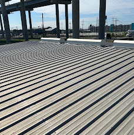

Maximum Roofing provides metal roofing in Staten Island, including standing seam, steel and aluminum roofing, installation, repair and replacement. We evaluate panels, seams, fasteners, flashing and the existing roof before discussing the next step.
Metal roofing offers durability, energy efficiency, and a long-lasting roofing solution when properly installed with quality materials and details.
Call (732) 395-3945This construction photo shows metal decking beneath a steel frame. It is not an example of a completed standing seam roof.

Maximum Roofing provides complete metal roofing services including installation, repair, replacement, inspections, and maintenance. We install durable metal roofing systems designed for residential properties throughout Staten Island, New York City, and Westchester County.
Standing seam metal roofing provides a clean modern appearance with concealed fasteners and strong weather protection.
Steel roofing offers strength, durability, and long-term performance when properly installed.
Aluminum roofing provides corrosion resistance and is a popular choice for many residential applications.
We repair leaks, damaged panels, loose fasteners, flashing issues, and storm damage affecting metal roofs.
When repairs are no longer practical, we provide complete metal roof replacement services.
Proper flashing around chimneys, skylights, walls, valleys, and roof edges helps prevent water intrusion.
Metal roofing is designed to withstand many weather conditions when properly installed and maintained.
Metal roofing can help reflect heat and work together with proper insulation and ventilation.
Routine inspections and maintenance help keep metal roofing systems performing properly.
Metal roofing provides protection against rain, wind, and changing weather conditions.
Metal roofs are available in many styles and finishes to complement different homes.
Many metal roofing materials are recyclable and designed for long service life.
The existing roof structure, decking, ventilation, slope, and drainage are evaluated before installation.
Old roofing materials may be removed and the roof surface is prepared for the new metal system.
Protective layers and flashing details are installed to provide water protection.
Metal panels or standing seam systems are installed with proper alignment and fastening.
The completed roof system, seams, edges, flashing, and drainage areas are reviewed.
Leaks can develop from damaged panels, flashing failures, loose fasteners, seams, or roof penetrations.
Bent, cracked, or damaged panels can affect the appearance and performance of a metal roofing system.
Fasteners that loosen over time can allow movement and potential water entry.
Wind, hail, falling branches, and severe weather can damage metal roofing components.
Improper or damaged flashing around chimneys, skylights, and walls can create leak issues.
Certain metal roofing materials may require attention when exposed coatings or protective finishes are damaged.
Small problems such as isolated leaks, damaged flashing, or individual panel issues can often be repaired. More extensive corrosion, widespread damage, or aging systems may require replacement.
Maximum Roofing evaluates the condition of the panels, fasteners, flashing, underlayment, ventilation, and overall roofing system before recommending the best solution.
Start with roof slope, the existing deck, exposure, appearance and maintenance expectations. Standing seam describes the panel-and-seam arrangement; steel and aluminum describe the metal. Ask which complete assembly is suitable for your property, including underlayment, fastening and flashing.
Compare proposals for panel profile, metal and finish, removal of existing roofing, substrate work, transitions at walls and penetrations, and written warranty terms. Material selection alone does not resolve an existing leak or drainage problem.
For budgeting, see roof replacement cost factors. For existing damage, compare roof repair with replacement. Copper has its own roofing guide.
Yes. Maximum Roofing provides metal roofing installation, replacement, and repair services for residential properties.
We install standing seam metal roofing, steel roofing, aluminum roofing, and other metal roofing systems.
Yes. We repair leaks, damaged panels, flashing issues, loose fasteners, and storm damage.
A metal roof's lifespan depends on the material, installation quality, maintenance, weather exposure, and roofing conditions.
Yes. Metal roofing is a durable option available in many styles and finishes for residential properties.
Yes. Regular inspections help identify loose fasteners, flashing issues, debris buildup, and other concerns.
In many cases, damaged panels or roofing components can be repaired or replaced depending on the condition of the system.
Yes. Call (732) 395-3945 or email jamesleo@maximumroofing.us to schedule a metal roofing consultation.
Roof area and slope, panel system, metal and finish, access, removal, decking condition and flashing details all affect the estimate. Request a property-specific inspection rather than relying on a generic price.
Maximum Roofing also lists metal roofing service in New York City and Westchester County. Call with your property location, roof type and concerns to discuss service and scheduling.
Contact Maximum Roofing for metal roof installation, repairs, replacement, inspections, and maintenance.
Phone: (732) 395-3945
Email: jamesleo@maximumroofing.us